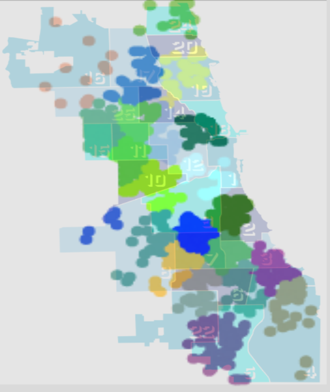

Show code cell source
!pip install opencv-python
import numpy as np
import pandas as pd
import matplotlib as mpl
import matplotlib.pyplot as plt
from sklearn.linear_model import LinearRegression
import seaborn as sns
import matplotlib.colors as mcolors
from sklearn.cluster import KMeans
import json # library to handle JSON files
import requests # library to handle requests
import folium # map rendering library
import cv2, os
from sklearn.svm import SVC
from sklearn.preprocessing import StandardScaler
from sklearn.pipeline import Pipeline
from sklearn.model_selection import train_test_split
from scipy import stats
import seaborn as sns; sns.set()
import math
import folium
from folium.features import DivIcon
mpl.use('Agg')
mpl.style.use('fivethirtyeight')
from sklearn.datasets import fetch_lfw_people, fetch_olivetti_faces
%matplotlib inline
from ipywidgets import interact
Requirement already satisfied: opencv-python in c:\users\pisihara\appdata\local\anaconda3\lib\site-packages (4.8.0.74)
Requirement already satisfied: numpy>=1.21.2 in c:\users\pisihara\appdata\local\anaconda3\lib\site-packages (from opencv-python) (1.24.3)
JNB Lab Solutions#
Section 1 Exercise#
Show code cell source
raw_CPS_data= pd.read_json('https://data.cityofchicago.org/resource/kh4r-387c.json?$limit=100000')
raw_CPS_data.head(1)
| school_id | legacy_unit_id | finance_id | short_name | long_name | primary_category | is_high_school | is_middle_school | is_elementary_school | is_pre_school | ... | fifth_contact_title | fifth_contact_name | seventh_contact_title | seventh_contact_name | refugee_services | visual_impairments | freshman_start_end_time | sixth_contact_title | sixth_contact_name | hard_of_hearing | |
|---|---|---|---|---|---|---|---|---|---|---|---|---|---|---|---|---|---|---|---|---|---|
| 0 | 609966 | 3750 | 23531 | HAMMOND | Charles G Hammond Elementary School | ES | False | True | True | True | ... | NaN | NaN | NaN | NaN | NaN | NaN | NaN | NaN | NaN | NaN |
1 rows × 92 columns
raw_CPS_data.columns
Index(['school_id', 'legacy_unit_id', 'finance_id', 'short_name', 'long_name',
'primary_category', 'is_high_school', 'is_middle_school',
'is_elementary_school', 'is_pre_school', 'summary',
'administrator_title', 'administrator', 'secondary_contact_title',
'secondary_contact', 'address', 'city', 'state', 'zip', 'phone', 'fax',
'cps_school_profile', 'website', 'facebook', 'attendance_boundaries',
'grades_offered_all', 'grades_offered', 'student_count_total',
'student_count_low_income', 'student_count_special_ed',
'student_count_english_learners', 'student_count_black',
'student_count_hispanic', 'student_count_white', 'student_count_asian',
'student_count_native_american', 'student_count_other_ethnicity',
'student_count_asian_pacific', 'student_count_multi',
'student_count_hawaiian_pacific', 'student_count_ethnicity_not',
'statistics_description', 'demographic_description', 'dress_code',
'prek_school_day', 'kindergarten_school_day', 'school_hours',
'after_school_hours', 'earliest_drop_off_time', 'classroom_languages',
'bilingual_services', 'title_1_eligible', 'preschool_inclusive',
'preschool_instructional', 'transportation_bus', 'transportation_el',
'school_latitude', 'school_longitude', 'overall_rating',
'rating_status', 'rating_statement', 'classification_description',
'school_year', 'third_contact_title', 'third_contact_name', 'network',
'is_gocps_participant', 'is_gocps_prek', 'is_gocps_elementary',
'is_gocps_high_school', 'open_for_enrollment_date', 'twitter',
'youtube', 'pinterest', 'college_enrollment_rate_school',
'college_enrollment_rate_mean', 'graduation_rate_school',
'graduation_rate_mean', 'significantly_modified',
'transportation_metra', 'fourth_contact_title', 'fourth_contact_name',
'fifth_contact_title', 'fifth_contact_name', 'seventh_contact_title',
'seventh_contact_name', 'refugee_services', 'visual_impairments',
'freshman_start_end_time', 'sixth_contact_title', 'sixth_contact_name',
'hard_of_hearing'],
dtype='object')
raw_CPS_data['grades_offered'].value_counts()
PK,K-8 327
9-12 144
K-8 82
7-12 11
PK,K-6 10
PK,K-5 10
6-12 9
K-6 8
6-8 6
PK,K-4 4
K-12 4
PE,PK,K-8 4
11-12 4
5-8 3
PK 3
K-5 3
PK,K-3 3
8-12 2
PK,K-2 2
7-8 2
PK,3-8 1
9 1
K,4-8 1
K-1,5-8 1
3-12 1
K-3,5-8 1
1-8 1
PK,K-7 1
10-12 1
4-11 1
K-3 1
K-2 1
4-8 1
Name: grades_offered, dtype: int64
df=raw_CPS_data[['address','student_count_total','student_count_black','student_count_hispanic','student_count_white','zip']]
df23=df[df['zip']==60623]
df23=df23.reset_index(drop=True)
df23.columns= ["address","total","black","hispanic","white","zip"]
df23.head(1)
| address | total | black | hispanic | white | zip | |
|---|---|---|---|---|---|---|
| 0 | 2819 W 21ST PL | 342 | 33 | 304 | 2 | 60623 |
for i in df23.index:
df23.loc[i,'%black']=round(100*df23.loc[i,'black']/df23.loc[i,'total'],1)
df23.loc[i,'%hispanic']=round(100*df23.loc[i,'hispanic']/df23.loc[i,'total'],1)
df23.loc[i,'%white']=round(df23.loc[i,'white']/df23.loc[i,'total'],1)
df23.head(1)
| address | total | black | hispanic | white | zip | %black | %hispanic | %white | |
|---|---|---|---|---|---|---|---|---|---|
| 0 | 2819 W 21ST PL | 342 | 33 | 304 | 2 | 60623 | 9.6 | 88.9 | 0.0 |
Show code cell source
from sklearn.linear_model import LinearRegression #sklearn is a machine learning library
X=df23[["%black"]]
Y=df23[["%hispanic"]]
reg=LinearRegression()
reg.fit(X,Y)
print("Intercept is ", reg.intercept_)
print("Slope is ", reg.coef_)
print("R^2 for OLS is ", reg.score(X,Y))
# x values on the regression line will be between 0 and 100 with a spacing of .0
x = np.arange(0, 100 ,.01)
# define the regression line y = mx+b here
[[m]]=reg.coef_
[b]=reg.intercept_
y = m*x + b
fig=df23.plot(x='%black', y='%hispanic', style='o')
plt.title('% Black vs % Hispanic in 60623 pre-K - 8 Schools')
plt.xlabel('% Black')
plt.ylabel('% Hispanic')
# plot the regression line
plt.plot(x,y, 'r') #add the color for red
plt.legend([],[], frameon=True)
plt.grid()
plt.show()
Intercept is [98.71284906]
Slope is [[-0.99515441]]
R^2 for OLS is 0.9996943205528053

Section 2 Exercise#
Show code cell source
# read from excel file, dropping all entries with N/A values
violence = pd.read_csv('Violence.csv').dropna(subset = ['LATITUDE', 'LONGITUDE'])
# Streamline columns to just latitude and longitude, reduce to just first 1000 entries
violence = violence[['LATITUDE', 'LONGITUDE']].head(1000)
# Reset the index for consistent numbering
violence = violence.reset_index(drop = True)
# Get the 100 colors used to identify clusters
colorlist = list(mcolors.XKCD_COLORS.values())[:100]
# Make a map that uses k-means clustering to divide locations into up to 100 clusters
#the inout variable (clusters) specifies the number of clusters.
#the input variable data specifies the locations.
def make_map(clusters,data):
assert clusters >= 1, "Number of clusters must be at least 1"
assert clusters <= len(colorlist), "Number of clusters exceeds maximum amount"
x=data[['LATITUDE', 'LONGITUDE']]
k_means = KMeans(n_clusters=clusters)
k_means.fit(x)
k_means_labels = k_means.labels_
x['labels'] = k_means_labels
k_map = folium.Map(location=[41.783, -87.621], tiles="Stamen Toner", zoom_start=10)
for i in np.arange(0,len(x),1): #add parcel data one
p=[x.loc[i,"LATITUDE"],x.loc[i,"LONGITUDE"]]# by one to the base map.
k_map.add_child(folium.CircleMarker(p, radius=1,color=colorlist[x.loc[i, 'labels']], fill = True, fill_opacity = 1))
return k_map
Let’s take a look at the 22 clusters.
cluster22_map = make_map(22,violence)
cluster22_map
C:\Users\pisihara\AppData\Local\anaconda3\Lib\site-packages\sklearn\cluster\_kmeans.py:870: FutureWarning: The default value of `n_init` will change from 10 to 'auto' in 1.4. Set the value of `n_init` explicitly to suppress the warning
warnings.warn(
C:\Users\pisihara\AppData\Local\anaconda3\Lib\site-packages\sklearn\cluster\_kmeans.py:1382: UserWarning: KMeans is known to have a memory leak on Windows with MKL, when there are less chunks than available threads. You can avoid it by setting the environment variable OMP_NUM_THREADS=4.
warnings.warn(
Make this Notebook Trusted to load map: File -> Trust Notebook
Here is an overlay of this map onto police districts.
{kind=link}
While it is not perfect, our k-means algorithm clustered the violent occurrences in a similar manner to the police district boundaries.
Section 3 Exercise#
Show code cell source
def imagetovector(npix,directory,nimages):
n=npix #use nxn pixel image
# You'll want to store all your images in a folder within the same directory as this notebook.
# Enter the name of that directory below.
directory = directory # example: "images"
# Dictionaries to store the image data and the dataframes we'll make from them.
# The dataframes are used to translate data to and from excel.
imgs = {}
dfs = {}
# Each image will be resized to ensure that their proportions are consistent with each other.
# It's best to start with images that are already similarly sized so that images don't get
# too distorted in the resize process.
# Adjust the size to your preference: (width, height)
dsize = (n, n)
# This will iterate over every image in the directory given, read it into data, and create a
# dataframe for it. Both the image data and its corresponding dataframe are stored.
# Note that when being read into data, we interpret the image as grayscale.
pos = 0
for filename in os.listdir(directory):
f = os.path.join(directory, filename)
# checking if it is a file
if os.path.isfile(f):
imgs[pos] = cv2.imread(f, 0) # image data
imgs[pos] = cv2.resize(imgs[pos], dsize)
dfs[pos] = pd.DataFrame(imgs[pos]) # dataframe
pos += 1
# Exports the image dataframes to an excel file, with each excel sheet representing one image.
# If there's already an excel file by the same name, it will overwrite it. Note that if the
# excel file it's attempting to overwrite is already open, the write will be blocked.
with pd.ExcelWriter('image_data.xlsx') as writer:
for i in np.arange(0, len(dfs)):
dfs[i].to_excel(writer, sheet_name=str(i))
def matrixtovector(matrix,n,s):
t=0
vec=pd.DataFrame()
for i in np.arange(0,n,1):
for j in np.arange(0,n,1):
vec.loc[t,str(s)]=matrix.loc[i,j]
t=t+1
return vec
numimages=nimages
data=pd.DataFrame()
for t in np.arange(0,numimages,1):
data.loc[:,str(t)]=matrixtovector(dfs[t],n,t)
return data,imgs
[traindata,imgs]=imagetovector(64,"letters",8)
traindata.head(4)
| 0 | 1 | 2 | 3 | 4 | 5 | 6 | 7 | |
|---|---|---|---|---|---|---|---|---|
| 0 | 255.0 | 255.0 | 255.0 | 255.0 | 255.0 | 255.0 | 255.0 | 255.0 |
| 1 | 255.0 | 255.0 | 255.0 | 255.0 | 255.0 | 255.0 | 255.0 | 255.0 |
| 2 | 255.0 | 255.0 | 255.0 | 255.0 | 255.0 | 255.0 | 255.0 | 255.0 |
| 3 | 255.0 | 255.0 | 255.0 | 255.0 | 255.0 | 255.0 | 255.0 | 255.0 |
from sklearn.decomposition import PCA
letter=traindata
pca = PCA(n_components=2)
pca.fit(np.transpose(letter))
letter_pca = pca.transform(np.transpose(letter))
filtered = pca.inverse_transform(letter_pca)
print("original shape: ", np.transpose(letter).shape)
print("transformed shape:", letter_pca.shape)
original shape: (8, 4096)
transformed shape: (8, 2)
Answer to part a)
fig=plt.figure(figsize=(2,2))
plt.gca().imshow(filtered[4].reshape(64, 64),
cmap="gray")
<matplotlib.image.AxesImage at 0x1d880976490>
Answer to part b)
Image of First principal component vector
#image corresponding to the 1st basis vector.
fig=plt.figure(figsize=(2,2))
plt.gca().imshow(pca.components_[0].reshape(64, 64),
cmap="gray")
<matplotlib.image.AxesImage at 0x1d880931610>
Image of the second principal component vector.
#image corresponding to the 2nd basis vector.
fig=plt.figure(figsize=(2,2))
plt.gca().imshow(pca.components_[1].reshape(64, 64),
cmap="gray")
<matplotlib.image.AxesImage at 0x1d8809d6490>
Answer to c).
letter_pca[1]
array([1286.48056884, 3118.77874561])
Answer to d) We could only model the first two pixels so would not have any idea of the images.
Section 4 Exercise#
Show code cell source
def imagetovector(npix,directory,nimages):
n=npix #use nxn pixel image
# You'll want to store all your images in a folder within the same directory as this notebook.
# Enter the name of that directory below.
directory = directory # example: "images"
# Dictionaries to store the image data and the dataframes we'll make from them.
# The dataframes are used to translate data to and from excel.
imgs = {}
dfs = {}
# Each image will be resized to ensure that their proportions are consistent with each other.
# It's best to start with images that are already similarly sized so that images don't get
# too distorted in the resize process.
# Adjust the size to your preference: (width, height)
dsize = (n, n)
# This will iterate over every image in the directory given, read it into data, and create a
# dataframe for it. Both the image data and its corresponding dataframe are stored.
# Note that when being read into data, we interpret the image as grayscale.
pos = 0
for filename in os.listdir(directory):
f = os.path.join(directory, filename)
# checking if it is a file
if os.path.isfile(f):
imgs[pos] = cv2.imread(f, 0) # image data
imgs[pos] = cv2.resize(imgs[pos], dsize)
dfs[pos] = pd.DataFrame(imgs[pos]) # dataframe
pos += 1
# Exports the image dataframes to an excel file, with each excel sheet representing one image.
# If there's already an excel file by the same name, it will overwrite it. Note that if the
# excel file it's attempting to overwrite is already open, the write will be blocked.
with pd.ExcelWriter('image_data.xlsx') as writer:
for i in np.arange(0, len(dfs)):
dfs[i].to_excel(writer, sheet_name=str(i))
def matrixtovector(matrix,n,s):
t=0
vec=pd.DataFrame()
for i in np.arange(0,n,1):
for j in np.arange(0,n,1):
vec.loc[t,str(s)]=matrix.loc[i,j]
t=t+1
return vec
numimages=nimages
data=pd.DataFrame()
for t in np.arange(0,numimages,1):
data.loc[:,str(t)]=matrixtovector(dfs[t],n,t)
return data,imgs
[traindata,imgs]=imagetovector(32,"exerciseimages",8)
traindata.head(2)
| 0 | 1 | 2 | 3 | 4 | 5 | 6 | 7 | |
|---|---|---|---|---|---|---|---|---|
| 0 | 54.0 | 29.0 | 0.0 | 17.0 | 215.0 | 245.0 | 88.0 | 197.0 |
| 1 | 41.0 | 65.0 | 0.0 | 16.0 | 182.0 | 242.0 | 93.0 | 186.0 |
model = SVC(kernel='linear', C=1)
X=[traindata.loc[:,"0"],traindata.loc[:,"1"],traindata.loc[:,"2"],traindata.loc[:,"3"],traindata.loc[:,"4"],traindata.loc[:,"5"],traindata.loc[:,"6"],traindata.loc[:,"7"]]
Y=[0,0,0,0,1,1,1,1] #Labels the images 0=Hillary Clinton 1=Michelle Obama
model.fit(X,Y)
ypred=model.predict(X)
ypred
array([0, 0, 0, 0, 1, 1, 1, 1])
[testdata,testimgs]=imagetovector(32,"exercisetestimages",4)
testdata.tail(2)
| 0 | 1 | 2 | 3 | |
|---|---|---|---|---|
| 1022 | 80.0 | 69.0 | 36.0 | 42.0 |
| 1023 | 80.0 | 44.0 | 37.0 | 47.0 |
#display the first test image
plt.imshow(testimgs[0], cmap="gray")
<matplotlib.image.AxesImage at 0x1d8806ee490>
#display the second test image
plt.imshow(testimgs[1], cmap="gray")
<matplotlib.image.AxesImage at 0x1d8806a9610>
#display the third test image
plt.imshow(testimgs[2], cmap="gray")
<matplotlib.image.AxesImage at 0x1d8fd121610>
#display the fourth test image
plt.imshow(testimgs[3], cmap="gray")
<matplotlib.image.AxesImage at 0x1d8fd179610>
Xtest=[testdata.loc[:,"0"],testdata.loc[:,"1"],testdata.loc[:,"2"],testdata.loc[:,"3"]]
model.predict(Xtest)
array([1, 0, 0, 1])
Note that in the output prediction, 0=Hillary Clinton and 1=Michelle Obama.